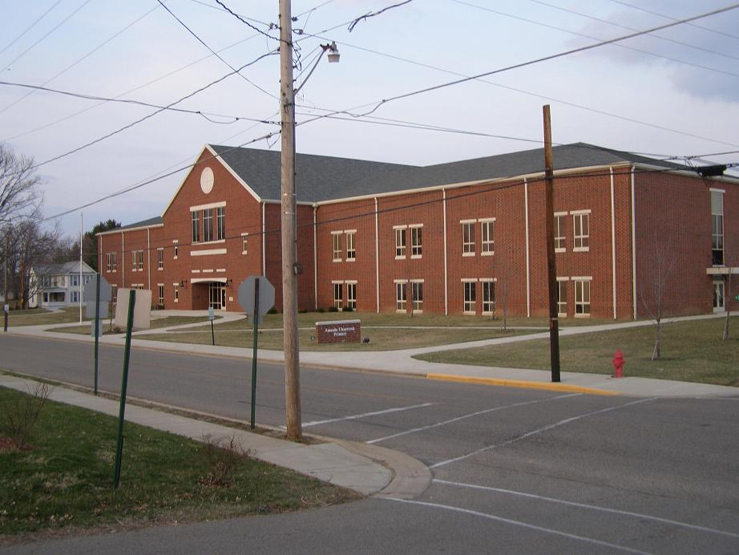

Amanda Clearcreek High School
The old Amanda Clearcreek High School building in Amanda (a little town just south of Route 22, midway between Lancaster and Circleville), was for many years known as haunted. It was demolished after the the start of the new century and replaced by a more modern facility in a new location. The old spot is still whispered about--specifically Amanda Clearcreek Primary, which went up once the old high school's foundation was filled in.
The famous story having to do with the old high school is that a little boy in "old-fashioned" dress would often haunt the building. No one knows who he is or what he wants, but he has been seen by janitors and even a teacher, who called the police to investigate. Anyone else who has seen this or knows more about the vaugue history behind it is asked to get in touch.

So...what about Amanda Clearcreek Primary School? Again, let me know if strange goings-on are reported there as well. It certainly looks like a nonthreateng place, but of course looks are often quite deceiving.
Back